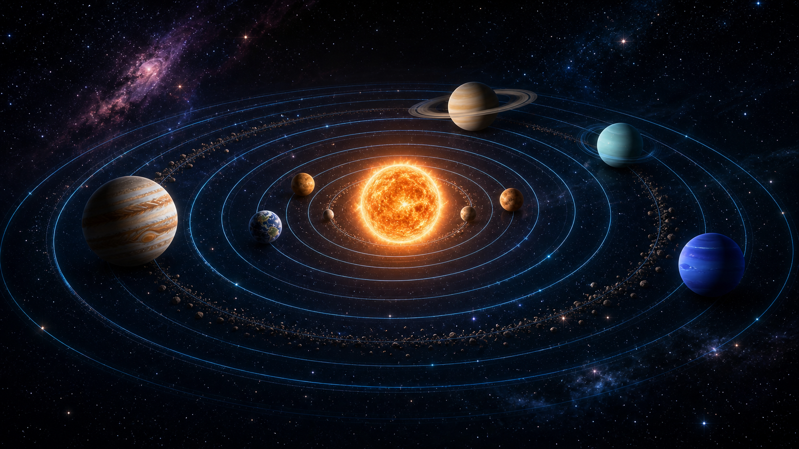

像一座运行中的宇宙钟表
太阳提供巨大的引力，把行星约束在轨道上。每颗行星距离太阳不同，公转速度和一年长度也不同。越靠近太阳的行星通常公转越快，越遥远的行星绕太阳一圈所需时间越长。
200+已知卫星
100万+小行星数量
8主要行星
ORBITAL OVERVIEW
太阳系是一个以太阳为中心的天体系统，包含行星、卫星、小行星、彗星以及大量尘埃和气体。行星并不是静止在太空中，而是在引力作用下沿各自轨道围绕太阳公转。
太阳提供巨大的引力，把行星约束在轨道上。每颗行星距离太阳不同，公转速度和一年长度也不同。越靠近太阳的行星通常公转越快，越遥远的行星绕太阳一圈所需时间越长。

PLANET JOURNEY
点击任意行星卡片，可展开更完整的科普信息。悬停时行星会轻微放大，模拟展厅中的发光展示台。
DATA COMPARISON
把八大行星放在同一张表里，更容易看出距离、大小、温度和运动周期的巨大差异。
| 行星 | 距离太阳 | 平均直径 | 温度 | 公转周期 | 卫星 | 行星环 |
|---|
INTERACTIVE MISSION
通过三个简单选择，发现与你性格最契合的太阳系目的地，开启一段专属的深空探索之旅。
WHY WE EXPLORE
探索太阳系，不只是认识远方的星球，也是理解我们所在的地球。越了解行星的差异，我们越能珍惜地球独特的水、空气、生命与稳定环境。
继续了解宇宙知识